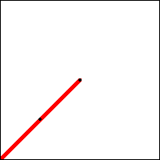
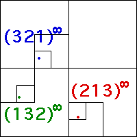

|  |  | |
| Click to stop. |
| The repeating pattern | ||||||
| T1 followed by T2 followed by T3 | ||||||
| produces a sequence converging to the three points with addresses | ||||||
| Click the left picture for an animation illustrating this. The right picture shows the three points to which these sequences converge, along with their addresses. | ||||||
|
Return to Cyclic IFS.